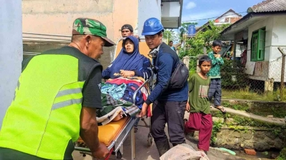

Tim Formula Tanggap Bencana LAZ Al Azhar datangi lokasi gempa yang terjadi di Kabupaten Cianjur, Jawa Barat. Mereka membantu mengevakuasi para warga penyintas gempa yang terkena dampak bencana ini, Senin, (21/11).
Gempa bumi berkekuatan 5.6SR melanda sejumlah kecamatan di Kabupaten Cianjur mengakibatkan ribuan rumah warga hancur. Bencana gempa bumi yang terjadi tepat pukul 13.21 WIB ini dipicu oleh pergerakan sesar Cimandiri. Gempa juga dapat dirasakan di sejumlah provinsi di Jawa Barat, Banten, dan DKI Jakarta.
Menurut catatan BMKG, Gempa susulan masih terus mengguncang Cianjur, Jawa Barat. Gempa terbaru terjadi pukul 4:48 pagi WIB pada Kamis (24/11/2022) dengan kekuatan magnitude 2,2 yang berpusat di darat 1 km timur laut Kabupaten Cianjur.
Konten ini telah tayang di Kompasiana.com dengan judul "Gempa Cianjur, Tim Formula Tanggap Bencana LAZ Al Azhar Turun Tangan", Merespon kejadian tersebut, tim Formula Tanggap Bencana LAZ Al Azhar, DKD Magelang dan relawan setempat melakukan aksi membantu meringankan kondisi warga terdampak. Kegiatan aksi dilakukan dengan membantu evakuasi warga, assesment di 9 desa terdampak, mendirikan 2 pos darurat bencana, membuka akses jalan yang tertutup reruntuhan bangunan, mendirikan dapur umum, membagikan makanan siap saji, mendistribusikan bantuan logistic, dan aksi medis.
"Proses evakuasi warga terus kami lakukan, terutama untuk keluarga yang mengalami luka-luka dan rumahnya hancur. Pos darurat bencana dan Dapur Umum juga kami dirikan di lingkungan Saung Ilmu Kampung Wargaluyu, Desa Nagrak, Kecamatan Cianjur, Kabupaten Cianjur," ujar Dofi, Koordinator tim Formula LAZ Al Azhar.
Di samping itu, kegiatan di Dapur Umum terus bergerak untuk menyuplai makanan siap saji agar dapat memenuhi kebutuhan pangan harian untuk warga terdampak dan relawan. Bantuan makanan siap saji diberikan langsung kepada 165 KK atau kurang lebih 1122 warga, yang sebagian besar masih bertahan di pos darurat bencana LAZ Al Azhar.
Hingga saat ini, warga terdampak masih bertahan di tenda dan pos darurat bencana LAZ Al Azhar karena khawatir gempa susulan kembali terjadi. Selain itu mereka juga masih membutuhkan bantuan kita terutama makanan, perlengkapan bayi, perlengkapan wanita, air bersih, alas tidur, dan selimut hangat.
Konten ini telah tayang di Kompasiana.com dengan judul "Gempa Cianjur, Tim Formula Tanggap Bencana LAZ Al Azhar Turun Tangan",
Klik untuk baca:
https://www.kompasiana.com/risnawati75575/63842c17165bcf78a624e843/gempa-cianjur-tim-formula-tanggap-bencana-laz-al-azhar-turun-tangan
Kreator: Risnawati Nurlatifah
Kompasiana.com